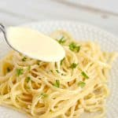

Modern Fettuccine Alfredo was created by Alfredo Di Lelio in Rome in the early 20th century. According to family lore, in 1892 Alfredo began to work in a restaurant located in Piazza Rosa that was run by his mother, Angelina. He cooked his first fettuccine al triplo burro ('fettuccine with triple butter' – later called fettuccine all'Alfredo, and eventually "Fettuccine Alfredo") in 1907 or 1908, in what is said to have been an effort to entice his convalescent wife, Ines, to eat after giving birth to their first child, Armando. Recipes attributed to Di Lelio include only three ingredients: fettuccine, "young" Parmesan cheese and butter. Yet there are various legends about the "secret" of the original Alfredo recipe: some say oil is added to the pasta dough; others that the pasta is cooked in milk.